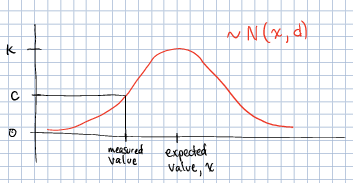

In this document, we will a) give an overview of Wii-Track; b) describe its overall system architecture and the reasons we chose the architecture; c) describe our hackathon implementation; and d) discuss how this project could be implemented at an industrial scale.
Wii-Track is a system for package tracking designed for use in a variety of scenarios such as warehouses. The name Wii-Track comes from the fact that we used a WiiFit board as our "scale" for this prototype.
Our overall goal was to make inventory tracking more cost-effective by utilizing sensors and data analytics to identify inventory items automatically, without human intervention. For the hackathon, we utilized two metrics (weight and color) to identify objects, however, we designed the system to scale to any number of additional metrics such as image recognition and infrared image data.
At a high level, the Wii-Track architecture has three components: edge nodes, compute nodes, and a data store. User-facing applications can be built on top of this framework (see Hackathon Implementation and Industrial Scale Implementation below).
There can be any number of edge nodes and compute nodes, and DynamoDB could be replaced by any other datastore.
The overall data flow is as follows:
Edge nodes -> Compute nodes -> Data store -> User facing applications
Here is a (non-comprehensive) list of considerations we discussed as we designed our system architecture:
Edge nodes may not have much compute power. For our prototype, we used a Raspberry Pi 1 which only has a 600 MHz ARM processor. Starting up simple Python GUI applications can take over 30 seconds! However, compared to many embedded devices, the Raspberry Pi has a large amount of compute power. Many embedded devices don't have the ability to malloc memory on the heap, so simple operations like string manipulation are not feasible.
This led us to push all of the computation onto AWS Lambda. Edge nodes only send raw data and we can then utilize the power of the Amazon infrastructure for data processing.
Edge nodes may be difficult to update. These embedded devices may be installed in low-bandwidth areas and then possibly not replaced for years. If we want to add new features, it would be difficult if computation were done at the edge. By pushing all of the processing to Lambda, if we want to update how the data is processed, it is very easy to update the Lambda function.
One tangible example of how this might be useful is that, in the future, we may find a way to use the weight data over time as a metric for determining the object using Machine Learning. If we only sent one data point to the Lambda function, we would have to update the edge nodes to handle this computationally-intensive ML. Whereas if all computation is done on Lambda, this is a relatively easy addition to our Lambda function.
Additionally, to support a new type of edge node, all we need to do is create a new Lambda function.
Server administration is hard. AWS Lambda abstracts the server away, so we are able to concentrate on code, not deployment. This was great for not only the HackCU hackathon, but also for scalability in the long term.
The data stored will not be uniform. If we have many different versions of edge nodes, the data sent and stored may not be the same across versions. For example, one version may send image data, while other nodes only have infrared data. Additionally, the data is not highly relational; relations between data are derived at an application layer. This variance in data that we need to store led us to use AWS DynamoDB, a scalable, NoSQL database running on Amazon infrastructure.
We wanted to, and did, win the Best Use of AWS challenge. One of the prizes at HackCU was for the application that best utilized Amazon AWS. We wanted to enter the competition for this prize, and that was part of the reason we used AWS Lambda and AWS DynamoDB. Our entry into this competition, won.
At HackCU, we implemented a proof of concept for this project. We built a prototype edge node, a prototype compute node, a prototype datastore, a client to view the data in the datastore, and a client to control the edge node.
Note
See the arduino and rpi directories and the wiiboard.py file for the edge node source code.
We implemented our edge node with two sensors: a scale (the WiiFit board) and a camera (Raspberry Pi camera mounted on an Arduino-controled servo). The Raspberry Pi was connected over TODO to the Arduino which controlled a servo over TODO. This servo swivelled the camera around. The camera was connected directly to the Raspberry Pi using TODO.
We built a client application in Qt using Python which controlled the servo, and also showed a live image of the package. We also had the ability to take pictures of the package. Our prototype required user interaction to take a picture, but ideally, we would trigger this picture when the package is put on the scale.
The WiiFit board was connected over Bluetooth to one of our computers. We would have liked to make the Raspberry Pi communicate directly with the WiiFit board, but this was infeasible since the Raspberry Pi does not have Bluetooth capabilities. We used the TODO library to communicate with the WiiFit. It provided us with a constant stream of four data points: one weight measurement for each of the four quadrants of the board. We sent this data directly to AWS using the requests library.
Note
See the color-lambda and weight-processing-lambda directories for the lambda function source code.
We created two Lambda functions to process the data from the edge node. If the edge node were integrated into the single Raspberry Pi, we could have made it a single Lambda function. However, because the edge node was implemented on two different computers, we had to create two Lambda functions for our prototype.
The color-lambda function processed data from the camera. It used
The weight-processing-lambda took the weight data, and attempted to match it to the weights already stored in a database table. The algorithm was as follows:
Take all of the weight data that is being sent from the WiiFit and calculate the average weight.
We query a database pre-seeded with information about inventory items to get all inventory items within 4kg of the measurement. (We could be much more intelligent about this measurement, but for the hackathon, we just hardcoded it.)
For each of the items returned from the query, we calculated a confidence that the item on the scale is indeed that object. We used a very simple metric for this: the value of the PMF of a normal distribution centered around the expected weight, x from the database with a standard deviation d also stored in the database. The hight of a normal distribution is not 1, so we had to multiply ba a factor (1 ⁄ k) to convert it to a percentage.
We store our confidences in each item in the DynamoDB database using the boto3 library by Amazon for manipulating AWS objects.
Note
See the dynamodb directory has code related to creating the database schema, and some test data that we used during development.
We used AWS DynamoDB as our datastore. We used this in two places: to store manually-computed inventory weight information, and to store the results of our predictions from the Lambda functions.
Our hackathon prototype cut a lot of corners, however we designed our project with scalability in mind.